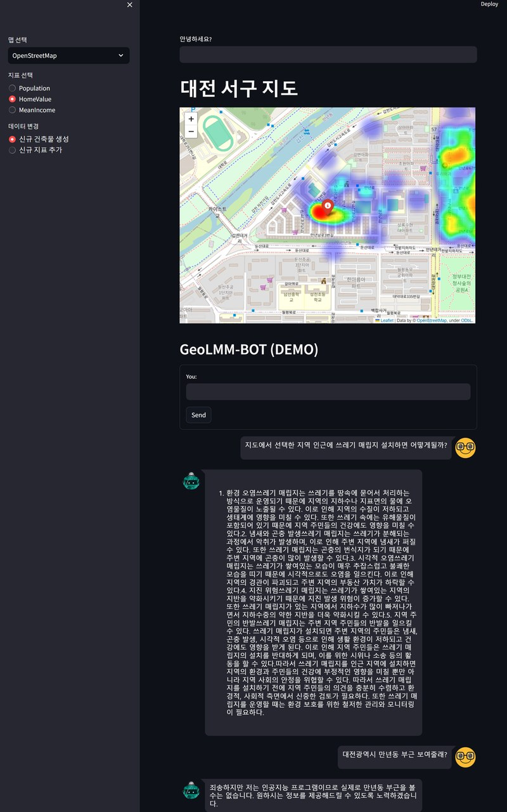

Latest Articles
 Research · Retrospective22
Research · Retrospective22Where, and What Happened: Wiring an Address Knowledge Graph to Multimodal Disaster Perception
The language of a disaster scene arrives as an address. But the judgement is made from video and sensors. Between those two languages sits a gap nobody fills for you. This year I built two pieces of software, one on each side of it — a knowledge graph that resolves addresses into coordinates and relations, and a perception API that reads four modalities on a single backbone. This is a record of trying to make them one stack, and of what is still undone.
 AI · Explainer18
AI · Explainer18Four Ways Retrieval Rescues Intelligence — Lexical, Semantic, Hybrid, and Graph RAG, and the Anatomy of Hallucination
A large language model's knowledge freezes the moment training ends. Retrieval-augmented generation (RAG) fills that gap by pulling in documents from outside the model. We dissect four retrieval architectures — Lexical, Semantic, Hybrid, and Graph — from first principles, and examine how they reduce hallucination and what still remains.
 AI · Explainer14
AI · Explainer14The Model With Refusal Erased: The Risks and Reasons for Being of the Abliterated LLM
A language model's 'refusal' is expressed as a single direction in its weights. A record of testing a model with only that direction erased, side by side with the standard version — and the balance between risk and necessity.
Do LLMs Understand Space? A 7,650-Question Spatial-Reasoning Benchmark
Reading a map is second nature to people. Dissecting six large language models across 7,650 questions, we re-weighed what it really means to 'understand space.'

AI · Explainer12The Language Model That Reads Maps: GeoLLM and Knowledge Graphs
Asked 'where is the nearest incinerator,' a language model gives a plausible but wrong answer. A build log of GeoLLM/GNLM that filled that gap with RAG, PostGIS, and a knowledge graph.
 Research · Retrospective11
Research · Retrospective11Drawing People on a Map Without a Camera: mmWave Geo-Referencing
Millimeter-wave radar sees a person not as an image but as a cluster of 'points.' The story of geo-referencing indoors with 3.5 cm average error, then scaling it to a stadium.